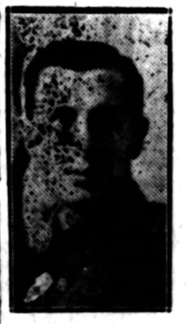
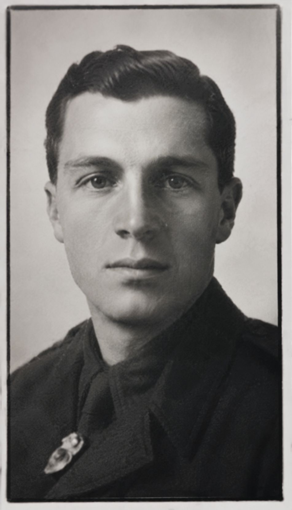

Russell William Bradberry


Jack Best was an Old Lyonian, a former bank clerk and an athlete who served with the Machine Gun Corps and rose to command a company before being killed instantly by shrapnel from a shell at Armentières on 15 May 1918, aged 26.
Civilian Life - Jack Best was born in Harrow on 22 February 1892, the second son of Albert and Lizzie Best. He was educated at John Lyon School in Harrow, where he completed his early school education, before moving to Churcher's College, Petersfield. In April 1909, aged 17, he worked as a bank clerk. The Worthing Gazette described him as working in branches of the London County & Westminster Bank at Horsham, Uckfield and Worthing. He was also known locally for his athletics.
Jack's family lived at Bank House, Midhurst, Sussex, by the time of his death. He had two brothers, Albert who was older and Ernest, who was younger. Albert served during the war, was wounded five times and received the Military Cross, while his younger brother, Ernest, served with the Indian Regular Army in France, Palestine and India.
Military Life - At the outbreak of the First World War, Jack left his position at the bank and enlisted in the Hampshire Royal Garrison Artillery. After three months he was commissioned into the Royal Sussex Regiment. In 1915 he transferred to the Machine Gun Corps and went to the Western Front in March 1916. He served at the Somme and subsequently remained continuously at the Front until his death.
In August 1917, Jack became second in command of a Machine Gun Corps company, and in October he was promoted to Captain and given command of a company. Research, conducted by John Lyon pupils in 2014, records him as serving with the 94th Company of the Machine Gun Corps and notes that the regiment was the first to use tanks. Jack's senior officer left a written testimonial about him: “In the short time we had grown to be friends I had always found him to be a soldier and a gentleman.”
The school research records that Jack survived the fighting on the Somme and later the battles around Armentières with barely a wound. On the morning of 15 May 1918, however, he was struck by shrapnel from a shell and killed instantly. He was 26 years old. Jack Best was remembered at Civray British Cemetery. His name is also recorded on the John Lyon School memorials and the Midhurst War Memorial.
His recorded life therefore spans his education at John Lyon School and Churcher's College, his employment as a bank clerk, and his involvement in athletics, followed by his military service with the Hampshire Royal Garrison Artillery, Royal Sussex Regiment and Machine Gun Corps. He became a Captain and company commander before being killed by shell shrapnel at the Front on 15 May 1918.